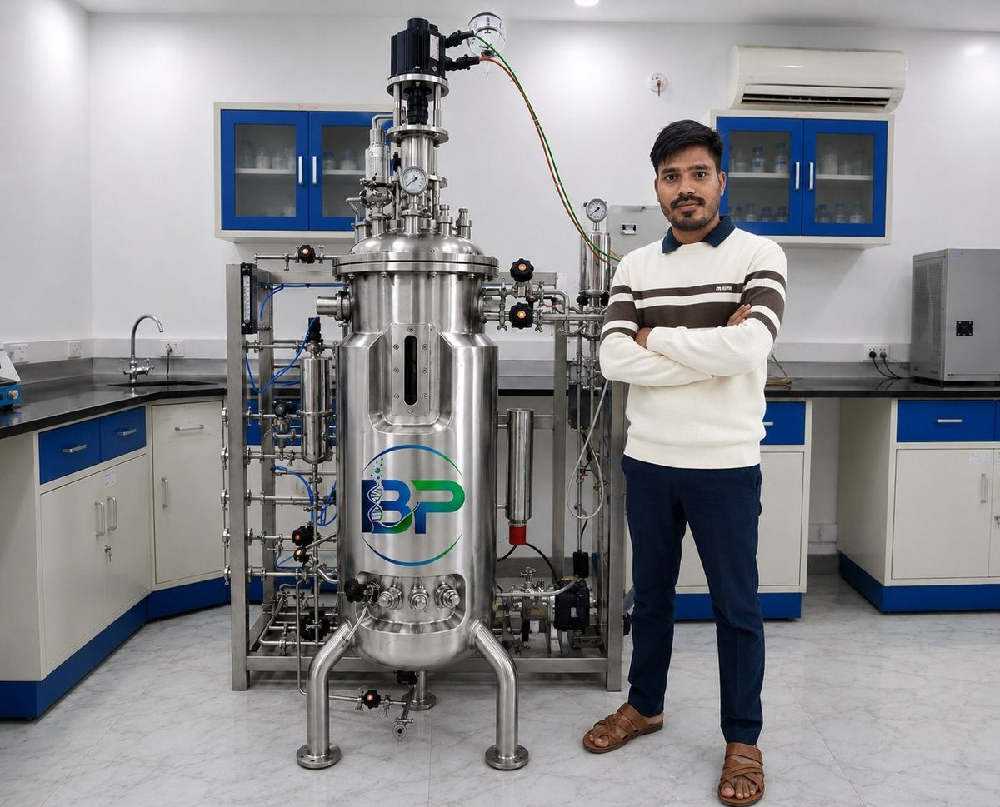

Advanced Fermenters & Bioreactors with Intelligent Automation
Bioprim Technologies engineers lab-to-production scale fermentation systems and PLC/SCADA automation, built in Mohali, Punjab for biotech, pharma, and research industries across India.
Bioprocess equipment engineered with precision
Bioprim Technologies is an emerging and innovative company specializing in the manufacturing of advanced Fermenters, Bioreactors, and automation control systems for the bioprocess industry. Founded by a young and dynamic entrepreneur with over 10 years of extensive experience in manufacturing, process development, bioprocess equipment, and industrial automation, the company is committed to delivering high-quality and customized engineering solutions.
With hands-on experience executing projects for reputed biotechnology institutions, universities, research organizations, and pharmaceutical industries across India, we combine technical expertise, innovation, and reliability to meet the evolving demands of biotech, pharma, fermentation, and research.
More about Bioprim →
Three fermenter series, one automation platform
 2L – 10L
2L – 10L
Bioprim-A
Lab scale glass fermenters for research applications. SS316L contact parts with borosilicate glass. Standalone, Twin & Parallel configurations.
View specifications → 8–10 vessels · 2L–10L each
8–10 vessels · 2L–10L each
Bioprim-P
Parallel glass fermenters with a centralized 10″–15″ touchscreen HMI for simultaneous multi-batch process optimization studies.
View specifications → 50L – 5,000L
50L – 5,000L
Bioprim-I
Pilot-to-production scale in-situ fermenters in premium SS316L, with mirror-polished internal surfaces (Ra ≤ 0.3 µm) and cascade automation.
View specifications →
Siemens PLC & SCADA-based process control
A hygienic stainless steel control panel with a high-speed Siemens PLC and 7″–15″ touchscreen HMI delivers real-time monitoring, historical trend analysis, automated batch reports, and intelligent alarm management — reducing operator dependency and enabling remote supervision.
Explore Automation & SCADA →Built for sterility, scale, and reliability
- Robust industrial-grade construction
- Energy-efficient, optimized process design
- Superior sterility for contamination-free operation
- Intelligent automation & real-time monitoring
- Scalable solutions for commercial production
- Reliable performance for continuous operations
- Customizable configurations to meet process requirements
- Mirror-polished surfaces, Ra ≤ 0.3 µm
Looking for a customized fermentation solution?
Our engineers are ready to guide you through the right vessel, automation level, and configuration for your process.